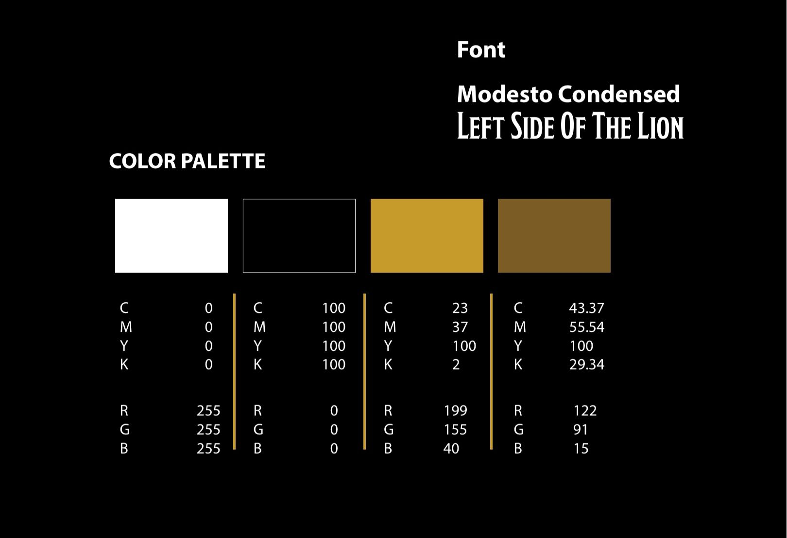
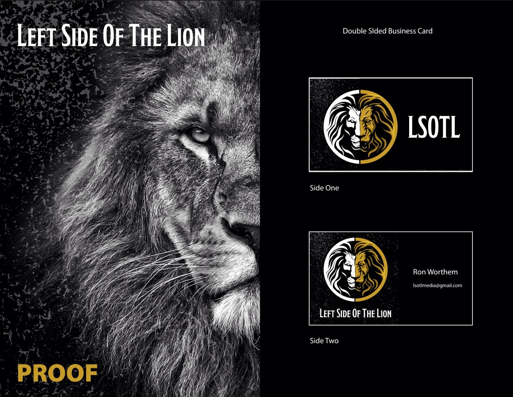
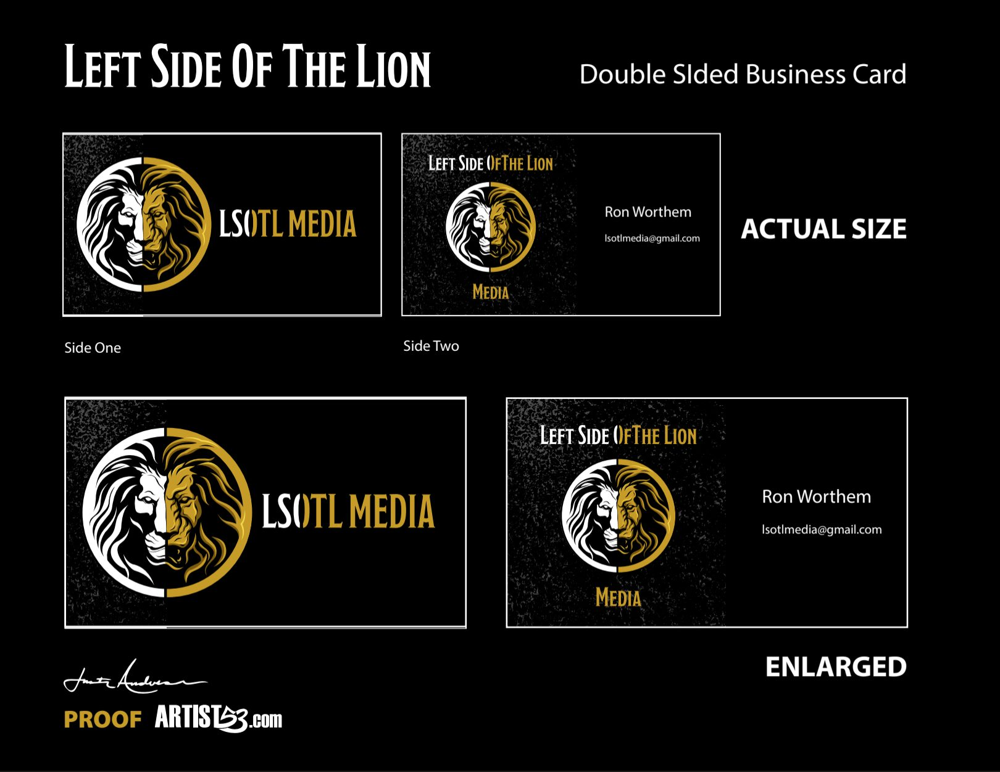

Logo Identity Case Study
Left Side Of The Lion
A media identity built around duality, strength and presence. The project evolved from a more ornate lion treatment into a focused split-lion symbol that could carry the brand across media, print and everyday business applications.
Back To Logos
01 / Beginning

Original Direction
Where The Identity Started
The early identity centered on a detailed lion portrait framed by ornamental linework. Black, gray and warm gold established the visual language, while the lion immediately gave the brand a sense of authority and character.
The Shift
The core idea was strong, but the identity needed a mark that would read faster and reproduce more consistently. Simplifying the illustration created room for a more recognizable symbol without losing the lion or the black-and-gold personality of the brand.
02 / Evolution
ClientLeft Side Of The Lion IndustryMedia & Content ServicesLogo Design & Identity DeliverablesLogo System & Brand Applications


Logo Development
Two Sides. One Lion.
The final direction places two contrasting lion treatments inside one circular mark. White and black define the left side while gold carries the right, creating a clean visual split that feels balanced as a single identity.
03 / Brand System

Color + Typography
A Tight Visual Language
The identity stays intentionally restrained: black and white create maximum contrast while two gold tones add warmth and a premium edge. A condensed display typeface gives the name a strong editorial presence beside the detailed lion mark.
White · #FFFFFF
Black · #000000
Gold · #C79B28
Deep Gold · #7A5B0F

Identity Specifications
Color values and the Modesto Condensed display type used to support the mark.
Brand Sheet
The primary lockup presented alongside the essential palette for consistent use.
04 / Applications
Identity In Practice
Built Beyond The Logo
The system was extended into business-card and media concepts, proving that the split-lion mark could move between symbol-only, abbreviated LSOTL and full-name treatments while keeping the same visual voice.


Flexible By Design
The circular lion can work as the hero mark, while LSOTL and Left Side Of The Lion provide shorter and longer naming options. That gives the identity enough range for cards, social graphics, video branding and future collateral without changing its core look.
Final / Identity
The Result
A Stronger, More Memorable Mark
The refreshed identity keeps the strength of the original lion concept but turns it into a cleaner system with a distinct silhouette, controlled palette and practical brand applications.